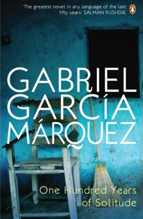

One of the most often quoted passages of Shakespearean text is the “To be or not to be” speech.
1. Set the following quote off with the <blockquote> tag
2. Add the character entity for "left quote" to the beginning and "right quote" to the end of the speech:
To be or not to be. That is the question. Whether tis nobler in the mind to suffer the slings and arrows of outrageous fortune, or to take arms against a sea of troubles and by opposing, end them. To die, to sleep no more. And by a sleep we mean to end the heartache and thousand natural shocks that flesh is heir to. To die, to sleep. To sleep, perchance to dream. Aye, there's the rub, for in the sleep of death what dreams may come when we have shuffled off this mortal coil must give us pause. There's the respect that makes calamity of so long life.
Following are few excerpts from Wikipedia for a few novels by the author Gabriel García Márquez. While the accented vowels that are already there may look okay, they are not! You must use character entities for these special characters when writing XHTML.
The list in the back of your class book will help you substitute the accents you see below

Leaf Storm (La Hojarasca) is García Márquez's first novella and took seven years to find a publisher, finally being published in 1955.[42] García Márquez notes that "of all that he had written (as of 1973), Leaf Storm was his favorite because he felt that it was the most sincere and spontaneous."
One Hundred Years of Solitude (Spanish: Cien años de soledad, 1967), by Gabriel García Márquez, is a novel which tells the multi-generational story of the Buendía Family, whose patriarch, José Arcadio Buendía, founds the town of Macondo, the metaphoric Colombia.

The Autumn of the Patriarch (original Spanish title: El otoño del patriarca) is a novel written by Gabriel García Márquez in 1975. A "poem on the solitude of power" according to the author, the novel is a flowing tract on the life of an eternal dictator. The book is divided into six sections, each retelling the same story of the infinite power held by the archetypical Caribbean tyrant.